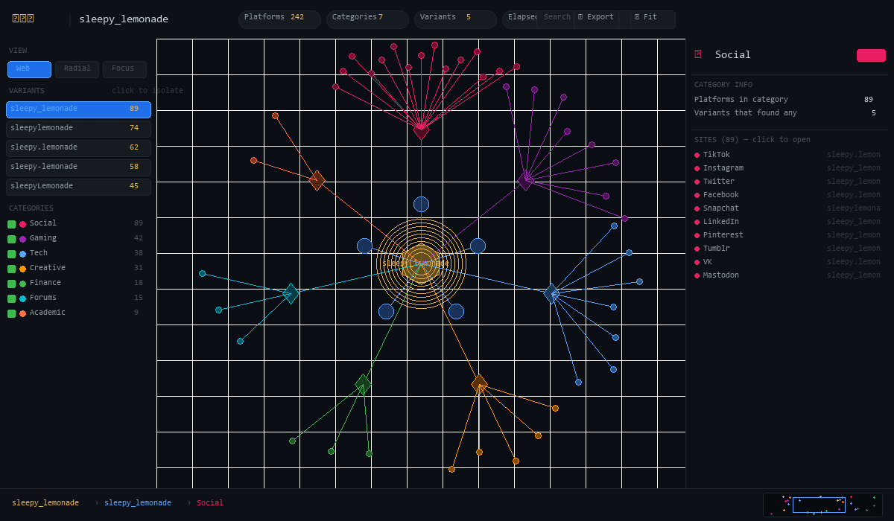
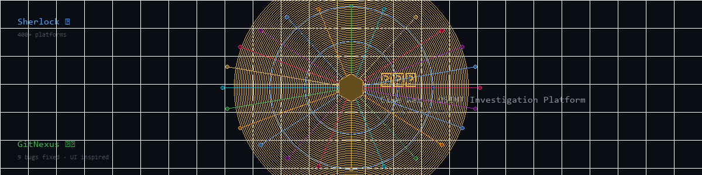
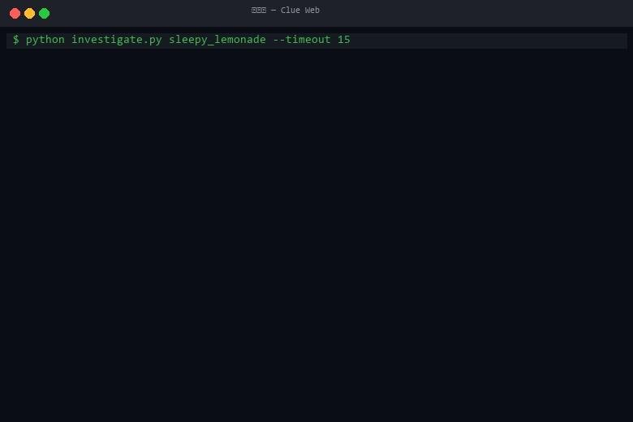

Clue Web: a living OSINT board for identity mapping.
Sherlock Clue Web turns open-source intelligence into a cinematic investigation surface. It distills thousands of platform checks into a clear, visual web of signals, links, and evidence for authorized security research.

The board is the story.
Every site, alias, and profile becomes a node. Connections pulse, break, and reform as the investigation evolves. The web is built to surface the important signals fast without losing the raw evidence.

Signal stack
Profile extraction
Pulls names, bios, avatars, and linked accounts into a single investigation timeline.
Variation engine
Generates alias permutations and checks them across the full site catalog.
Evidence export
Collect URLs and metadata into a ready-to-share evidence bundle.
Interactive physics
Nodes drift and reconnect to surface clusters and anomalies visually.
Gallery view
Scan images and bios at a glance without losing the graph context.
Research mode
Designed for authorized security research, brand monitoring, and digital footprint review.
Command line, visual result
Run the investigation locally, then open the board in the browser for the full interactive analysis. Keep the terminal for raw logs and evidence.
Use only on accounts or targets you have explicit permission to research.

Ethical use first
Clue Web is built for authorized OSINT investigations, security research, and incident response. Never use it for harassment, unauthorized targeting, or privacy violations.
Safety guardrails
Toolchain alignment
This project pairs Sherlock and Clue Web with a broader, curated security toolkit for research environments. One of the most popular catalogs is maintained here:
Use responsibly and follow local laws and authorization requirements.